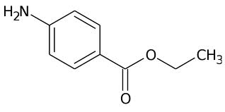
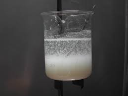
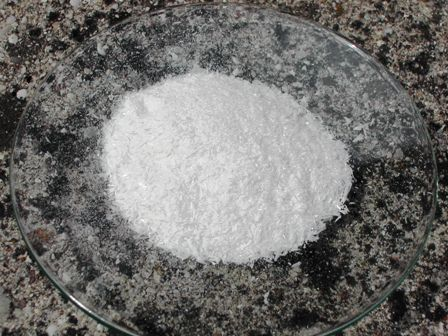

Quando posso, mi piace fare qualche piccolo collegamento tra la mia chimica sperimentale e la storia di questa scienza.
Anche l'etile-p-amminobenzoato, alias benzocaina, alias anestesina, ha una sua storia, che riassumo in due parole.
A Eberbach (Germania) c'è una azienda a conduzione famigliare (giunta ormai alla quarta generazione) fondata da Eduard Ritsert nel 1903. Il dottor Ritsert era interessato negli ultimi decenni del secolo diciannovesimo a trovare un sostituto della cocaina come anestetico, ma che non possedesse i suoi evidenti effetti collaterali.
Trovò la soluzione nel 1890, quando sintetizzò e verificò l'efficacia dell'estere etilico dell'acido p-amminobenzoico come anestetico locale: azione rapida, persistenza fugace e, quello che più conta, relativamente innocuo.
A questa sostanza diede anche un bel nome commerciale: la chiamò (per dirla all'italiana) "Anestesina".
Confermando in oltre un secolo il valore della scoperta, la Ritsert produce ancora oggi alcuni presidi farmaceutici a base di benzocaina.
(Attenzione al suffisso "-caina": quasi sempre è sinonimo di "anestetico locale").
Vista la mia empatia chimica verso gli esteri (oltre che per tante altre sostanze...) poteva mancare l'amminobenzoato di etile? Certo che no, e allora... mano agli alambicchi!
Materiale occorrente:
- acido p-ammonobenzoico NH2-C6H4-COOH
- etanolo CH3-CH2-OH
- acido solforico H2SO4
- sodio idrossido NaOH
- vetreria opportuna
Esistono varie procedure per la sintesi della benzocaina, ma principalmente esse si basano sull'esterificazione diretta acido/alcol secondo Fischer. Non metto la reazione ma solo la formula del prodotto.

Ho seguito questa procedura:
- In un pallone da 100 ml porre 5 g di acido p-amminobenzoico e 35 ml di etanolo, mescolando fino a portarne in soluzione il più possibile. Ora aggiungere goccia a goccia, raffreddando e mescolando vigorosamente, 5 ml di acido solforico concentrato.
Si forma presto un precipitato bianco e denso, che richiede un mescolamento energico e il raffreddamento del pallone; non aver fretta nell'aggiunta dell'acido.

Terminata questa fase sistemare il pallone su un termomanto con refrigerante a ricadere e regolare la temperatura per un tranquillo riflusso per un'ora e mezza.
Dopo un poco, col riscaldamento la miscela ritorna perfettamente limpida, di colore leggermente rosato, come è alla fine del riflusso.
 Nel frattempo preparare una soluzione al 10% di NaOH.
Nel frattempo preparare una soluzione al 10% di NaOH.
Alla fine lasciar raffreddare e poi aggiungere, goccia a goccia sempre mescolando vigorosamente per non creare concentrazioni locali dannose, la soluzione di soda, controllando spesso il pH della soluzione.
Terminare l'aggiunta quando tutto l'acido residuo sarà stato neutralizzato e il pH diventerà basico, circa 8.
Si sarà formato ancora un precipitato bianco, denso, e tutta la miscela verrà trasferita in un becher contenente 500 ml di acqua, nella quale il prodotto si separa in leggeri cristallini.

Filtrare su buchner e lavare a piccole porzioni per eliminare totalmente i sali solubili residui.
Ho poi ricristallizzato il prodotto grezzo (di colore leggermente beige) con circa 40 ml di etanolo quasi bollente, aggiungendo a piccole porzioni acqua molto calda fino ad inizio intorbidamento; a questo punto lasciar raffreddare lentamente, lasciar riposare e filtrare di nuovo.
Si ottiene una polvere bianca in cristallini aghiformi, inodora.

Resa 3,1 g (51%), del tutto accettabile. Ho verificato anche il p.f. per verificare la purezza e ho trovato 92° (teorico 89-92°) quindi mi ritengo pienamente soddisfatto.
Riguardo gli usi ed il principio d'azione di questo semplice anestetico rimando come al solito alle notizie facilmente reperibili in rete alla voce "benzocaina".
Nel mio caso il p-amminobenzoato di etile non ha anestetizzato nessuno (se non un leggero intorpidimento della punta della mia lingua usata immediatamente come test) ed è poi finito nella sua bottiglietta, in buona compagnia con gli altri esteri.